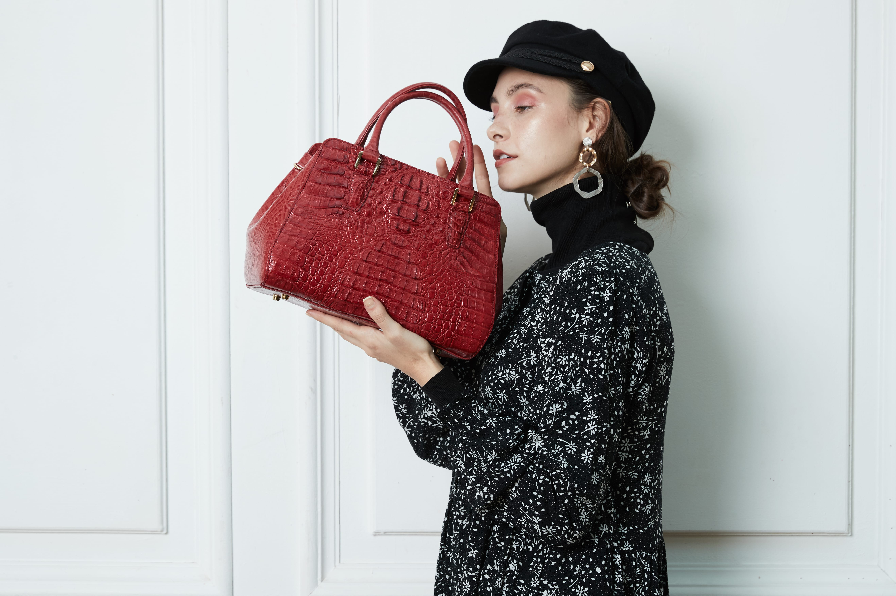

EXOTIC LEATHER
The King of Exotic Leather

THE MATERIAL
크로커다일 가죽은 세계에서 가장 희귀하고 가치 있는 소재 중 하나입니다.
한 마리의 크로커다일에서 극히 일부분만이 최상급 제품으로 완성될 수 있습니다.
아르테사노의 크로커다일 컬렉션은 40년 장인이 엄선한 최상급 스킨만을 사용합니다.
사용할수록 깊어지는 광택, 단단하면서도 부드러운 질감이 세월을 담아내며
함께 나이 들어가는 진정한 럭셔리를 선사합니다.
CHARACTERISTICS
수천 년의 진화가 만든 자연의 걸작.
크로커다일 가죽이 최고의 소재인 이유.
모든 스킨은 고유한 자연 패턴을 지닙니다. 세상에 완전히 동일한 크로커다일 가죽 제품은 존재하지 않으며, 당신의 가방은 지구에서 단 하나뿐입니다.
크로커다일 가죽은 시간이 지날수록 더욱 깊고 풍부한 광택을 발합니다. 오래 사용할수록 더 아름다워지며, 세월을 담은 제품만이 가질 수 있는 독보적인 품격이 깃듭니다.
자연에서 가장 강인한 파충류 소재로, 올바른 관리 시 수십 년을 함께할 수 있습니다. 진정한 럭셔리는 세대를 넘겨 물려줄 수 있는 것입니다.
CRAFTSMANSHIP
한 점의 크로커다일 가방이 완성되기까지 40단계 이상의 수작업 공정.
그것이 CROCINI가 시간을 다루는 방식입니다.
CROCINI ATELIER
원하는 컬러와 디테일로 세상에 단 하나뿐인
크로커다일 가방을 아르테사노 장인이 완성합니다.